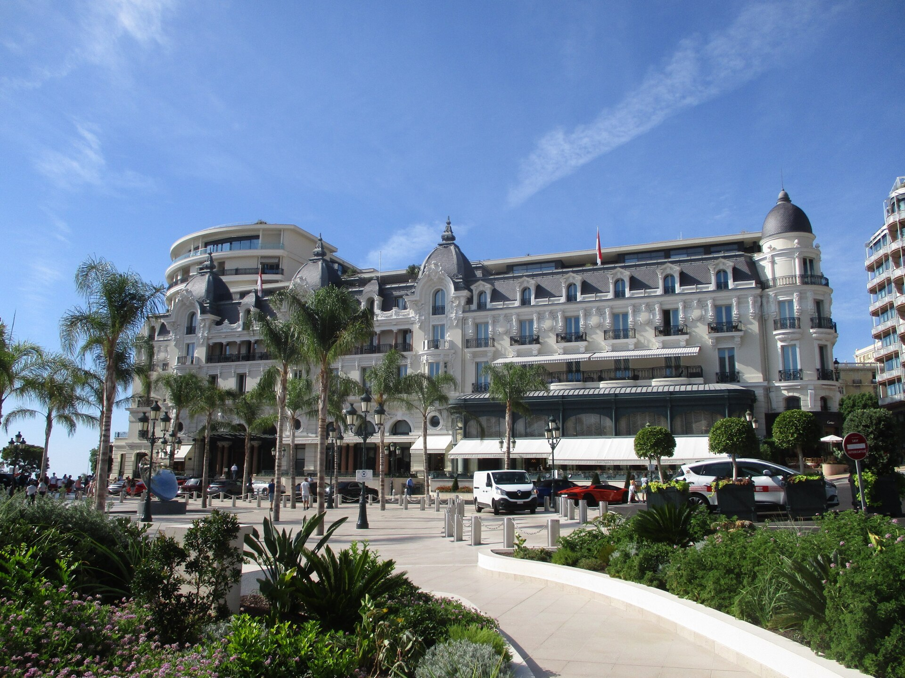

PATRI REALTY · PRÉVIA EDITORIAL · APURAÇÃO 22/10/2026 · NÃO PUBLICADO EM PRODUÇÃO
Le Louis XV: três Estrelas Michelin em Mônaco
No Hôtel de Paris Monte-Carlo, o Le Louis XV leva a assinatura de Alain Ducasse e a cozinha de Emmanuel Pilon. Conheça o perfil e os canais oficiais.

Um restaurante dentro de um hotel, com distinção própria
O nome completo é importante: esta pauta trata do Le Louis XV, situado no Hôtel de Paris Monte-Carlo. O Michelin descreve uma cozinha ligada ao Mediterrâneo e identifica Emmanuel Pilon no trabalho associado a Alain Ducasse. O site Ducasse Paris confirma o endereço e oferece o caminho oficial de reserva. [1][2]
Nossa leitura editorial é que a combinação entre restaurante e hotel pode facilitar um roteiro, mas não autoriza presumir que reservar um serviço inclua o outro. Confirme cada contratação separadamente.
O Mediterrâneo como referência, não um menu fixo
A inspiração da Riviera aparece na apresentação oficial. Isso ajuda a situar a proposta culinária, mas não permite anunciar um prato específico como disponível em qualquer data. Para restrições alimentares e preferências, consulte diretamente a equipe de reservas. [2]
Não descrevemos sabor, textura ou atendimento como se a redação tivesse realizado uma refeição. A curadoria se apoia na distinção do guia e nas informações institucionais. A adequação ao gosto de cada viajante continua sendo uma decisão individual.
O que confirmar antes de organizar a noite
Pergunte sobre menu vigente, duração esperada, vestimenta solicitada, acessibilidade e condições para o grupo. Verifique o endereço da confirmação e planeje a chegada de acordo com a sua hospedagem. São pontos sugeridos para planejamento, sem afirmar que exista uma mesma exigência para todas as reservas.
Também é prudente discriminar alimentação, bebidas e despesas adicionais no orçamento. Uma proposta de harmonização pode ter condições próprias. Solicite as regras de pagamento, alteração e cancelamento do serviço efetivamente escolhido.
Por que entra na curadoria da Patri Realty
O endereço completa o recorte com uma proposta mediterrânea em Mônaco, ao lado das referências de Modena e Girona. Os três restaurantes compartilham a faixa máxima de Estrelas nesta seleção, mas não são apresentados em ordem de superioridade. [3]
A foto é do exterior do Hôtel de Paris, feita em 2020, e não do salão do Le Louis XV. É uma imagem de contexto devidamente identificada. Não usamos fotografias de pratos retiradas de reportagens sem licença, nem atribuímos ao restaurante uma avaliação própria da Patri Realty.
Perguntas frequentes
Quem está à frente da cozinha mencionada pelo guia?
A ficha consultada identifica Emmanuel Pilon no trabalho ligado à assinatura de Alain Ducasse. A informação foi verificada em 22 de outubro de 2026.
O Le Louis XV fica na França?
O restaurante fica em Mônaco, na Place du Casino, dentro do Hôtel de Paris Monte-Carlo.
A reserva do hotel inclui a do restaurante?
Não presuma essa inclusão. Confirme disponibilidade e condições do restaurante em seu próprio canal de reserva.
Verbetes
- Assinatura culinária
- Identidade e direção associadas à proposta de um chef; não significa que ele cozinhe pessoalmente em toda sessão.
- Riviera
- Referência geográfica e cultural ao litoral mediterrâneo presente na apresentação oficial da casa.
- Reserva confirmada
- Contratação validada pelo canal responsável, com data, quantidade de pessoas e condições identificadas.
Fontes consultadas
- Michelin — Le Louis XV
- Ducasse Paris — site oficial do endereço
- Michelin — seleção França e Mônaco 2026
Continue a leitura
- Guia Michelin: seis endereços para uma viagem de alto padrão
- Osteria Francescana: três Estrelas Michelin em Modena
- El Celler de Can Roca: três Estrelas Michelin em Girona
Kit de publicação
- Título SEO
- Le Louis XV: três Estrelas Michelin em Mônaco
- Meta description
- No Hôtel de Paris Monte-Carlo, o Le Louis XV leva a assinatura de Alain Ducasse e a cozinha de Emmanuel Pilon. Conheça o perfil e os canais oficiais.
- Legenda social
- Em Mônaco, a inspiração mediterrânea do Le Louis XV leva a assinatura de Alain Ducasse e o trabalho de Emmanuel Pilon. Conheça este endereço de três Estrelas Michelin e os cuidados antes de reservar.